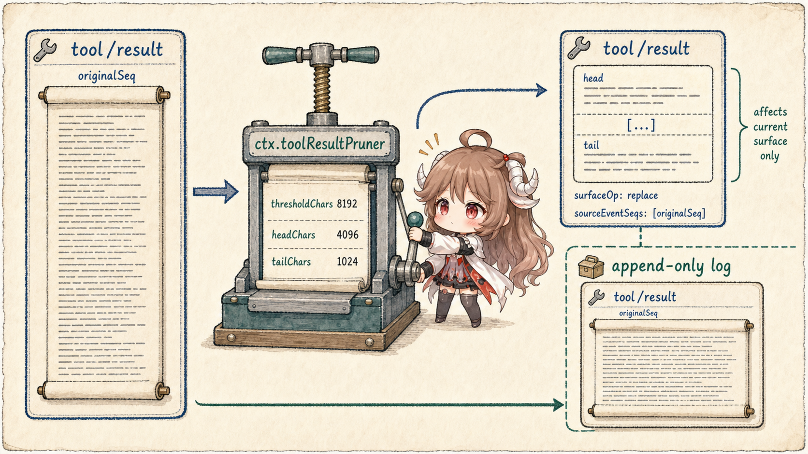
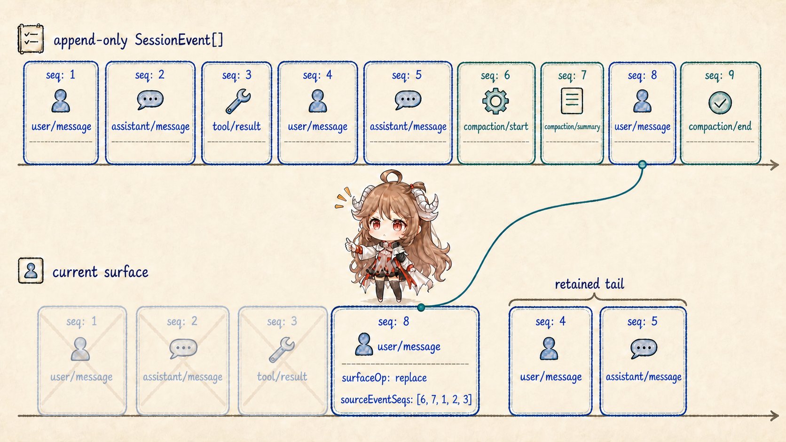
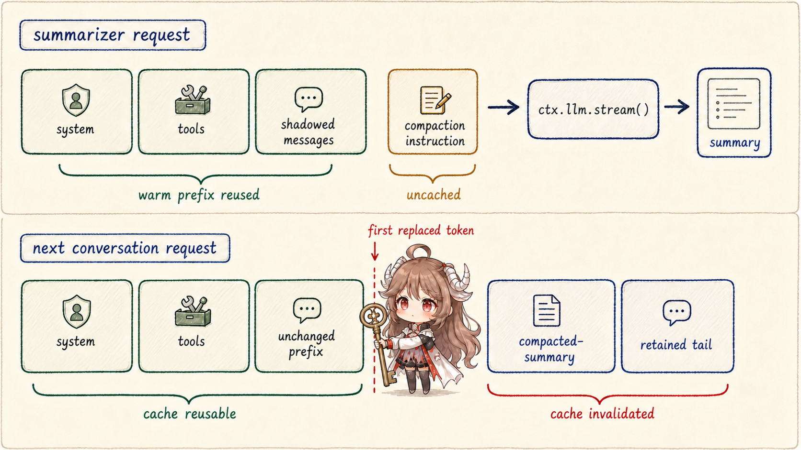
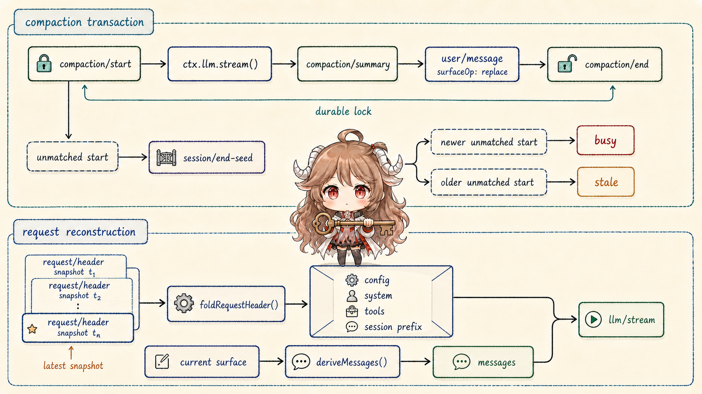

“Summarize when context gets long” hides four separate problems: which request gets priced; where a range can be cut without splitting tool call/result pairs; whether a summary appends or replaces; and how system text, tools, provider config, and session prefix return after restoration. Solving only the first yields a prompt trick, not a runtime protocol.
DSH makes compaction an auditable state transition. ctx.tokenMeter prices the actual request envelope and current surface. A pruner may address pure bulk first. The compaction backend opens a bracket in the log, and exactly one sourced user/message replacement performs the surface mutation.
Reading contract.After this chapter, you should be able to explain what 0.8 and 0.16 control; why a below-pressure step must not opportunistically prune; why ranges use surface position rather than numeric seq; how the summary request reuses old KV cache while a future request invalidates it; and which reconstruction job belongs to raw log, current surface, and request/header.
Evidence boundary.This chapter is pinned to b150a55. The defaults belong to compaction-basic, not the permanent seam contract. Provider capacity, usage, and KV-cache billing remain adapter reports. Source relationships can validate a replacement; they cannot prove that a generated summary retained every business fact.
1. Price the complete request before deciding to compact
1.1 Pressure is not messages.length
BasicCompactionEngine reads the latest canonical logged envelope and current surface at the same consumed-log revision. Measurement therefore covers system prompt, tool schemas, routing, assistant completion, tool results, buffered context, and steering—not just conversation strings.
Capacity comes from the adapter that owns the latest durable provider/model route. The default trigger is thresholdRatio: 0.8, with retainRatio: 0.16 preserving the recent surface; exact provider/model entries may override policy. When an adapter cannot expose capacity, ordinary pressure reports a target-specific configuration problem, while provider-confirmed canonical overflow may still force a reduction attempt.
1.2 Select only whole, balanced, replaceable surface units
Range selection starts at the oldest nodes, reserves a recent tail, and uses the tool-pairing boundary helpers so no unanswered call crosses a cut. Turn boundaries do not protect old steps in one runaway turn. An open indivisible tail instead makes compaction decline until it closes.
A range is a surface-position span, not a numeric seq interval. After replacement, the new high-seq event occupies the shadowed range's old position. Later compaction must read current membership, not infer it from start <= seq <= end.
2. Apply model-free pruning before paying for summarization
2.1 The tool-result pruner changes only the model surface

ctx.toolResultPruner acts when text blocks exceed 8192 Unicode code points by default, retaining 4096 at the head, a fixed marker, and 1024 at the tail. Non-text blocks keep relative order. Slicing never splits a UTF-16 surrogate pair, though it may split a grapheme cluster.
The new tool/result copies all original data except content and carries surfaceOp: replace with sourceEventSeqs: [originalSeq]. The original remains in the append-only log. The result is strictly smaller and within threshold, so another pass emits no replacement.
2.2 Pruning is pressure-qualified, not background housekeeping
A below-pressure step check never prunes. Once pressure or canonical overflow qualifies, the basic backend invokes the optional pruner and remeasures through the token meter. If the request is now safe, it skips summarization. Cheap deterministic shrink comes first without invalidating a reusable prefix merely because a result “looks large.”
A character budget is not a token budget. Surface compaction cannot fix a tool unit whose non-text or non-prunable remainder is still too large, or an envelope where system and tools alone approach the window.
3. Successful compaction performs one surface mutation
3.1 A five-step bracket ties source, replacement, and lock together

compaction/startappends synchronously and acquires the log-recorded lock.- The backend creates a summary and revalidates that the selected span has not drifted.
compaction/summaryrecords raw summary, range, shadowed seqs, token measurement, and call envelope; it is log-only.- One
user/messagecarries checkpoint content,compactCheckpointSource(compactionId), andsurfaceOp: replace. ItssourceEventSeqscite start, summary, and every shadowed seq in that order. This is the only surface mutation. compaction/endreleases the lock last.
The next model request sees one <compacted-summary> checkpoint followed by the recent tail. Human transcript and exact audit still read old append-origin events. The summary is not appended as a second history copy, and compaction/* never enters the model surface.
3.2 Convergence and changed spans fail explicitly
The basic backend rejects a summary that is not smaller than its source and retries according to compactionRetries. Failure to return below threshold eventually throws. If the selected span changes while summarization is in flight, the stale summary never lands over new history: a changed/summary failure closes the bracket and preserves the surface. If even the close append fails, the unmatched start intentionally remains a blocking orphan.
4. Summarization and future requests move cache in opposite directions
4.1 The summarizer replays the old prefix; only its final instruction is new

The default summarizer is not an isolated “please summarize” prompt. It calls ctx.llm.stream() directly, replaying the conversation's system, tools, and shadowed-region messages verbatim, then appending the fixed compaction instruction. On the same provider/model, warm cache remains reusable up to that final instruction. A different route or non-head range gives up that advantage.
The call sets purpose: 'compaction' without changing the model-visible body. Only returned text enters the checkpoint. Reasoning and tool calls are excluded, while image output fails with UNSUPPORTED_CONTENT instead of producing an orphan or disappearing silently.
4.2 Replacement invalidates future requests from the first changed token
A future conversation request may reuse system, tools, and unchanged history before the replacement. From the first shadowed token onward, the old cache no longer matches, so checkpoint and recent tail are recomputed. An append-only audit log does not imply unchanged request bytes; KV cache follows the model surface.
5. Request headers reconstruct the non-history envelope
5.1 deriveMessages owns history only

deriveMessages() projects user, assistant, and tool history from current surface. It does not invent system text, tool schemas, call config, or session prefix. Those live in full canonical request/header snapshots whose reason is initial, resume, or change.
foldRequestHeader() skips ordinary events and selects the last snapshot. Empty system/tools canonicalize to absence, and tool schemas compare in order. Logging adds no duplicate history tokens, yet anyone holding a log prefix can recombine “the envelope actually sent then” with derived messages.
5.2 end-seed distinguishes a live lock from old crash evidence
The latest unmatched compaction/start after the newest session/end-seed belongs to this lifecycle and returns busy. A start before that boundary is stale evidence from a prior process and does not block. Because the lock lives in the log rather than a WeakSet, restoration has evidence for this decision.
6. Engineering consequences of the protocol
- Do not implement compaction as deletion.Shadow model surface; audit, recovery, and human history still need old facts.
- Measure the envelope before history.No number of summaries fixes a system prompt or schema set that already fills the window.
- Prefer deterministic pruning first.It may avoid a model call, but should run only after pressure qualifies and must be remeasured.
- Require provenance on replacement.A checkpoint without compactionId and sourceEventSeqs cannot prove what it displaced.
- Judge cache by request bytes.Append-only logging does not mean model cache remains valid forever.
- Summaries are lossy.Relations can be valid while semantics are incomplete; critical workflows should rely on structured state and external facts.
Part VI turns to multiple agents: how spawn, fork, workflows, and the Ralph loop share one SubagentRuntime while bounding session lineage, tool scope, concurrency, and delegation depth.
Source references
- compaction-basic README and source: pressure, retention, summary replay, transaction, and overflow recovery.
- compaction seam README: service boundary, tool pairing, surface contract, and durable bracket.
- tool-result-pruner README: code-point budgets, content-only replacement, and limitations.
- request-header.ts and the Session README: envelope reconstruction, surface replacement, and KV-cache semantics.